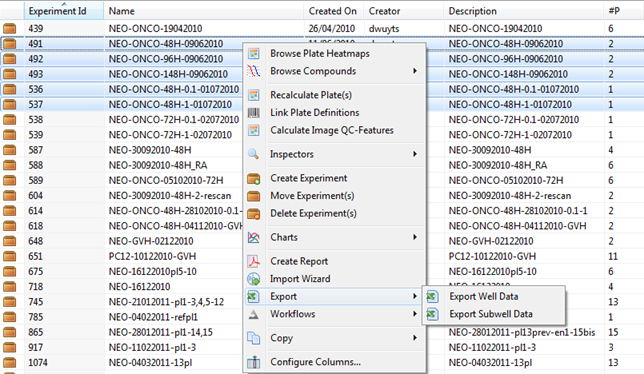
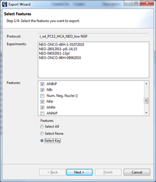
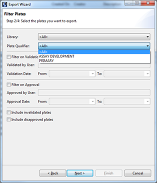
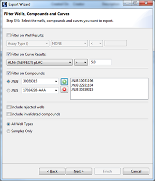
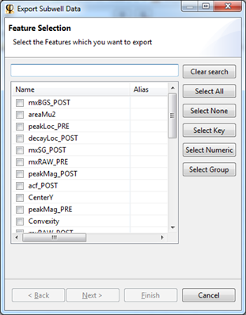
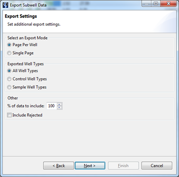
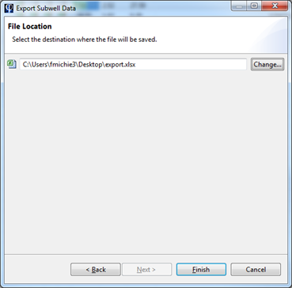

Phaedra supports export of data into Excel (xlsx) or Text (txt or csv) format. The items that can be exported are:
- Well data, including well number, compound information, plate barcode, feature values and curve fit results
- Subwell data, including well number and subwell feature values
Note that depending on the number of plates being exported, this operation may take some time to complete.
Exporting well data
To export well data, right-click on an experiment and select Export > Export Well Data.

A dialog will open, where you can select the well features that should be exported.

In the next screen, you can set filters on which plates to include in the export. For example, you can export only plates that belong to a specific plate library.

In the next screen, you can set filters on which wells to include in the export. For example, you can limit the export to a specific set of compounds.

In the final screen, you can specify which columns to include in the exported file. Also, here you need to specify the output location of the export file.

Click on Select Destination to set a location for the export file, and a file type (Excel or Text).
When you have set a destination, you can click Finish to start the export process. You will get a notification when the export is complete.
Exporting subwell data
The process to export subwell data is very similar to the well data export described above. Right-click on the plates or experiment to export, and select Export > Export Subwell Data.
A dialog will open, where you can select the subwell features to export.

In the next screen, you can filter the data by selecting a specific well type, or by selecting a random subset of the data to export. This may be useful if you only need a sample of the full dataset, which may contain many millions of rows.

In the final screen, you must select a destination location for the export file. Click on Change... to select a destination and a file type (Excel, Text or HDF5).
